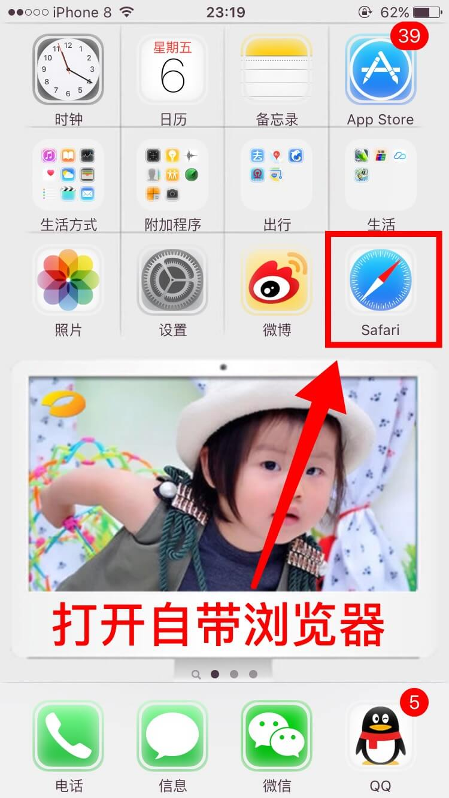
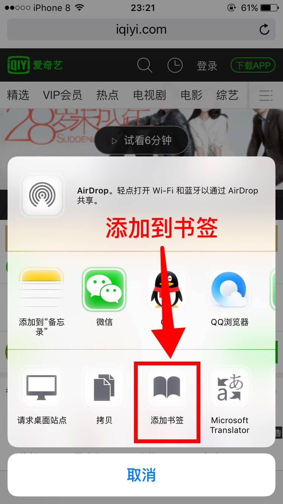
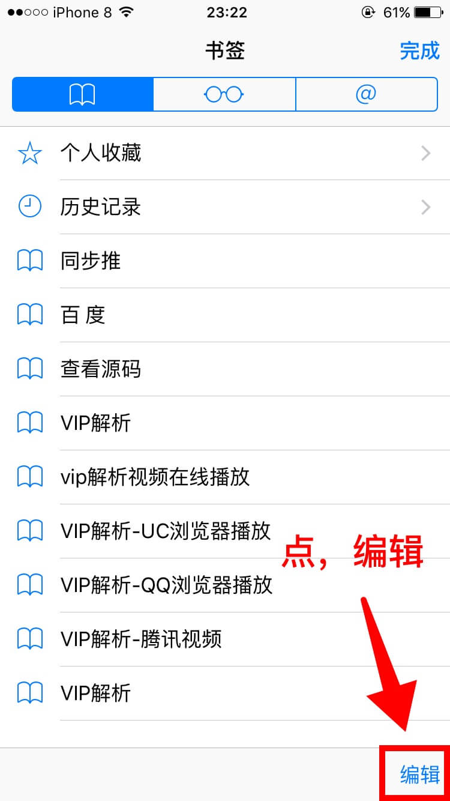
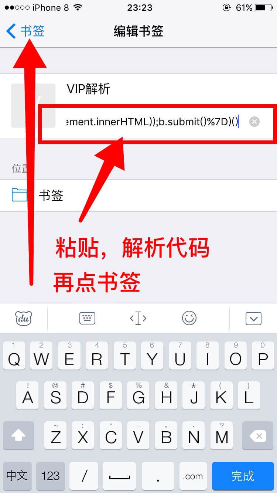
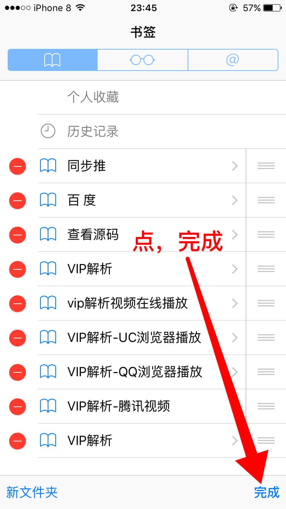
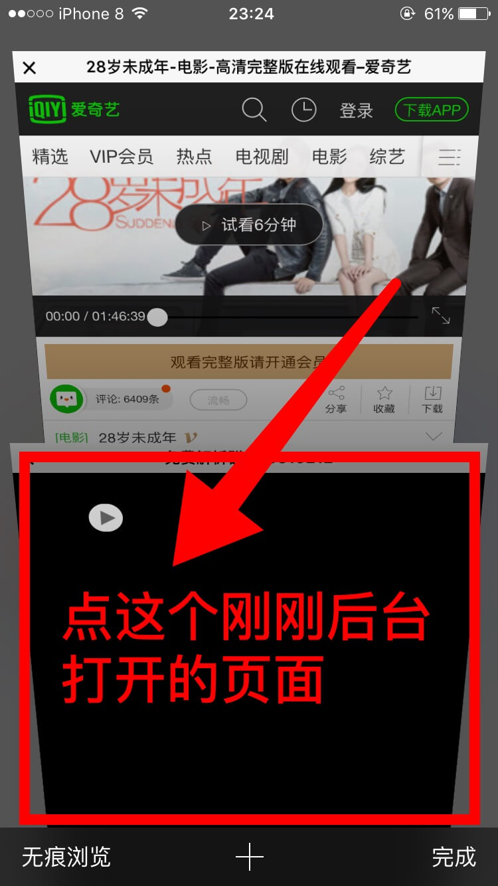

Safari浏览器观看VIP视频方法，无需下载任何工具、软件、插件
首先看看使用方法演示视频效果。
接下来我们就来 设置代码书签，看图文教程!
1.首先打开苹果自带Safari浏览器。

2.然后打开vip视频网站，选择你要看的视频，点击中间。
3.选择，添加到书签。

4.编辑名字，随便写，如：VIP解析。点存储。

5.再点书签。
6.点右下角编辑。

7.复制下面解析代码：
javascript:(function()%7Bvar%20d=window.open(%22about:blank%22),a=d.document;a.write(%22%22);a.close();var%20b=a.body.appendChild(a.createElement(%22form%22));b.setAttribute(%22method%22,%22post%22);b.setAttribute(%22action%22,%22http://www.yydy8.com/Common/?url=%22+location.href);var%20c=b.appendChild(a.createElement(%22input%22));c.setAttribute(%22type%22,%22hidden%22);c.setAttribute(%22name%22,%22DOM%22);c.setAttribute(%22value%22,encodeURIComponent(document.documentElement.innerHTML));b.submit()%7D)()
粘贴到地址上，再点，左上角 书签

8.然后点右下角 完成。

这样就设置完成了
下面图文使用方法
1.找到你要看的vip视频。点击 书签
2.选择你刚刚修改过的书签

3.到这里是不是感觉点了好像没反应，其实是有反应的，只是是在后台打开了 点击，下面切换页面，就可以看到了。
4.这就是刚刚点解析代码书签打开的页面。

5.最后这样就可以看视频了，尽情的享受VIP视频吧。

下面是进阶篇：
我们还可以在代码中加入浏览器urlschemes，实现跳转到QQ浏览器，或者UC浏览器播放，可以实现快进等操作。
下面我将编辑好的QQ浏览器播放代码和UC浏览器播放代码放出来。
QQ浏览器播放代码：
javascript:(function()%7Bvar%20d=window.open(%22about:blank%22),a=d.document;a.write(%22%22);a.close();var%20b=a.body.appendChild(a.createElement(%22form%22));b.setAttribute(%22method%22,%22post%22);b.setAttribute(%22action%22,%22mttbrowserextension://url=http://www.yydy8.com/Common/?url=%22+location.href);var%20c=b.appendChild(a.createElement(%22input%22));c.setAttribute(%22type%22,%22hidden%22);c.setAttribute(%22name%22,%22DOM%22);c.setAttribute(%22value%22,encodeURIComponent(document.documentElement.innerHTML));b.submit()%7D)()
UC浏览器播放代码：
javascript:(function()%7Bvar%20d=window.open(%22about:blank%22),a=d.document;a.write(%22%22);a.close();var%20b=a.body.appendChild(a.createElement(%22form%22));b.setAttribute(%22method%22,%22post%22);b.setAttribute(%22action%22,%22ucbrowser://http://www.yydy8.com/Common/?url=%22+location.href);var%20c=b.appendChild(a.createElement(%22input%22));c.setAttribute(%22type%22,%22hidden%22);c.setAttribute(%22name%22,%22DOM%22);c.setAttribute(%22value%22,encodeURIComponent(document.documentElement.innerHTML));b.submit()%7D)()
更多代码：http://ae85.cn/vip/Safari-s.html
看腾讯VIP视频的的方法：
打开腾讯VIP视频网页后，点中间分享按钮找到【请求桌面站点】然后再选择书签解析，就可以看了。